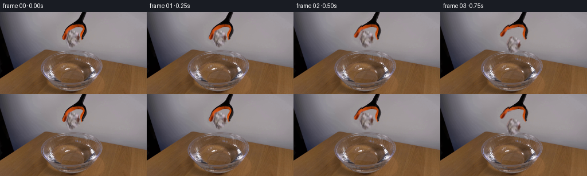
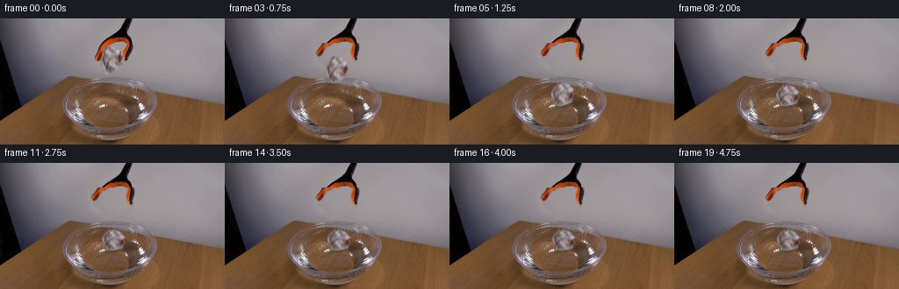
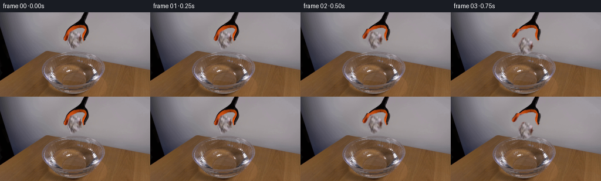

CODING AGENTS AS PIXEL WORLD MODELS
traex/GPT-6.1-Sol · 0135
点击播放 · 原生 RGB 像素
逐轮保存的候选
回放视频、检查图与代码变化。
每份候选均可单独播放。实际图片检查记录在下方工具轨迹中。
候选 01播放与检查图
点击播放 · 原生 RGB 像素

展开代码变化
--- 上一保存版本
+++ 本次保存版本
@@ -0,0 +1,230 @@
+from pathlib import Path
+import numpy as np
+from PIL import Image, ImageDraw
+import cv2
+from scipy.ndimage import gaussian_filter, distance_transform_edt
+import artifact_io
+
+ROOT=Path(__file__).resolve().parent
+H,W=144,256
+first=np.array(Image.open(ROOT/'first_frame.png').convert('RGB'),dtype=np.uint8)
+Y,X=np.mgrid[:H,:W].astype(np.float32)
+
+def polygon_mask(points, soft=.28):
+ scale=4
+ im=Image.new('L',(W*scale,H*scale),0)
+ ImageDraw.Draw(im).polygon([(round(x*scale),round(y*scale)) for x,y in points],fill=255)
+ a=np.asarray(im.resize((W,H),Image.Resampling.LANCZOS),np.float32)/255
+ return gaussian_filter(a,soft) if soft else a
+
+def blend(img, rgb, alpha):
+ return img*(1-alpha[...,None])+rgb*alpha[...,None]
+
+# Fit the diffuse grey backdrop using only visible wall pixels around the setup.
+# Fine texture is kept at the edge of the patch; all of the stationary scene remains photographic.
+xn=(X-130)/70; yn=(Y-30)/40
+features=np.stack([np.ones_like(X),xn,yn,xn*xn,xn*yn,yn*yn,xn**3,xn*xn*yn,xn*yn*yn,yn**3],-1)
+wall_samples=(Y<66)&(X>78)&(X<202)&~((X>104)&(X<157))
+wall_samples &= np.max(first,axis=-1)>115
+coefs=np.linalg.lstsq(features[wall_samples],first[wall_samples].astype(float),rcond=None)[0]
+wall=np.einsum('hwk,kc->hwc',features,coefs).astype(np.float32)
+
+# Silhouette of the existing shaft and stationary black/orange pivot housing.
+head=polygon_mask([(141.8,-2),(152.5,-2),(150.8,4),(148.5,10),(146.5,14),(144,16),
+ (144.6,17),(146,19),(147.9,20.7),(149.8,23),(150.1,25.8),
+ (141,25.8),(135,26),(130,27),(125,28),(120,28),(119,26),
+ (121,23),(123.5,21),(126,19),(129,17),(132,14.5),
+ (134,12),(136,8),(138,3)])
+# Arms are two separate photographic sprites, hinged at the orange housing.
+left=polygon_mask([(117.2,25.5),(133,25.5),(132,27),(129.5,29),(126.5,31),
+ (123.7,33),(121,34.5),(119,35),(118.5,37),(117.5,39),
+ (116.7,41),(116.5,43),(115.7,45),(114.8,47),(114.3,48.8),
+ (110,49),(108.2,47.7),(107.8,45),(108.5,42),(109.5,39),
+ (110.2,37),(111,35),(112,32.8),(113.5,30),(115,28)])
+right=polygon_mask([(139,25.3),(149.8,25.3),(151.4,29),(152,32),(152,35),
+ (150.8,38),(149.3,40),(147.9,42),(146.5,44),(145.6,45.7),
+ (146,47.7),(145.1,49.8),(142.8,50.1),(140.7,48.3),
+ (139.5,46),(139.9,43.5),(139.2,41),(139.3,38),
+ (140.5,35.8),(141.5,33.5),(143,31),(144.2,29),
+ (143.5,27.3),(141,26.5)])
+# The fine grey/tan folds of the paper are retained from the input, not redrawn.
+rows=[(32,122,131),(33,120,132),(34,118.8,133),(35,118,135),
+ (36,118,137),(37,118,137),(38,117.5,137),(39,117,137),(40,117,137),
+ (41,116.2,137.8),(42,116,138.5),(43,116,139.2),(44,115.4,139.4),
+ (45,115.3,139),(46,115,138.5),(47,115,138.6),(48,115,138.8),
+ (49,115,139),(50,115,139),(51,115,139.4),(52,115.5,139.3),
+ (53,115.5,139),(54,116.5,137.9),(55,117.5,136.8),(56,119,136.2),
+ (57,120,135.2),(58,120,134),(59,120.5,133),(60,121.5,132),
+ (61,122,131),(62,123,129),(63,124,127)]
+paper=polygon_mask([(a,y) for y,a,b in rows]+[(b,y) for y,a,b in rows[::-1]],.25)
+
+# Wide removal mask for the original movable objects, with all antialiased edges covered.
+remove=polygon_mask([(140,0),(154,0),(153,10),(149,17),(153,26),(155,34),
+ (152,41),(148,47),(148,51),(143,53),(141,57),(138,60),
+ (132,65),(121,66),(118,62),(116,59),(113,56),(111,52),
+ (105,50),(105,42),(108,33),(112,27),(118,21),(126,15),
+ (133,9)],.5)
+# Independent repeatable sensor-grain texture on the reconstructed wall.
+rng=np.random.default_rng(410)
+noise=gaussian_filter(rng.normal(0,1.15,(H,W)),.5)
+wall+=noise[...,None]
+base=blend(first.astype(np.float32),wall,remove)
+# Transparent recovery removes background colour from partially covered sprite edges.
+def sprite(alpha, colour=first):
+ # Use natural colour at edges, rather than sharpen the low resolution source.
+ return colour.astype(np.float32)*alpha[...,None]
+
+p_rgb=first.astype(np.float32).copy()
+# A tiny bit of orange contact-reflection should not travel with a falling sheet.
+contact=(X<123)&(Y<37)&(paper>.01)
+amount=np.clip((p_rgb[...,0]-p_rgb[...,1]-27)/85,0,.7)*contact
+neutral=np.stack([p_rgb[...,1]+13,p_rgb[...,1]+3,p_rgb[...,1]+4],-1)
+p_rgb=p_rgb*(1-amount[...,None])+neutral*amount[...,None]
+
+
+def warp_layer(colour, alpha, M):
+ prem=colour.astype(np.float32)*alpha[...,None]
+ al=cv2.warpAffine(alpha,M,(W,H),flags=cv2.INTER_LINEAR,borderMode=cv2.BORDER_CONSTANT)
+ co=cv2.warpAffine(prem,M,(W,H),flags=cv2.INTER_LINEAR,borderMode=cv2.BORDER_CONSTANT)
+ return co, np.clip(al,0,1)
+
+def over_prem(frame, prem, alpha):
+ return frame*(1-alpha[...,None])+prem
+
+def affine(pivot, angle=0, sx=1,sy=1,destination=None):
+ a=np.deg2rad(angle)
+ linear=np.array([[np.cos(a)*sx,-np.sin(a)*sy],[np.sin(a)*sx,np.cos(a)*sy]])
+ target=np.array(pivot if destination is None else destination)
+ return np.c_[linear,target-linear@np.array(pivot)].astype(np.float32)
+
+# Water surface is bounded by the bowl. Small ripples distort existing RGB texture.
+surf_cx,surf_cy=124,99
+water_r=np.sqrt(((X-surf_cx)/45)**2+((Y-surf_cy)/24.5)**2)
+water_mask=np.clip((1-water_r)*8,0,1)
+water_mask*=np.clip((Y-77)/7,0,1)*np.clip((121-Y)/5,0,1)
+
+# Determine first contact using an air-drag trajectory. The light paper accelerates,
+# then loses energy into the water and floats instead of falling through the bowl.
+release=.42
+terminal=89.; tau=.30
+
+def air_params(age):
+ drop=terminal*(age-tau*(1-np.exp(-age/tau)))
+ angle=13*(1-np.exp(-age/.38)) + 4*np.sin(age*3)
+ sx=1+.035*np.sin(age*3.1)
+ sy=1-.025*(1-np.exp(-age/.5))
+ return drop,angle,sx,sy
+
+pcoords=np.array([(x,y) for y,l,r in rows for x in (l,r)],float)
+pivot=(127,47)
+contact_y=99.3
+impact_age=.6
+for age in np.linspace(0,1.5,15001):
+ d,ang,sx,sy=air_params(age)
+ M=affine(pivot,ang,sx,sy,(127+age*1.5,47+d))
+ coords=pcoords@M[:,:2].T+M[:,2]
+ if coords[:,1].max()>=contact_y:
+ impact_age=age
+ break
+impact=release+impact_age
+impact_drop,impact_angle,impact_sx,impact_sy=air_params(impact_age)
+
+frames=[first.copy()]
+for index in range(1,20):
+ t=index/4
+ opened=np.clip((t-.18)/.52,0,1)
+ opened=opened*opened*(3-2*opened)
+ f=base.copy()
+ since=t-impact
+ if since>=0:
+ # Radial waves in the obliquely seen horizontal water plane.
+ r=np.sqrt((X-128.2)**2+((Y-contact_y)/.49)**2)
+ dx=np.zeros((H,W),np.float32);dy=dx.copy();light=dx.copy()
+ for j in range(3):
+ age=since-j*.19
+ if age<0: continue
+ radius=4.4+30.0*age
+ envelope=np.exp(-.5*((r-radius)/1.05)**2)
+ strength=1.25*np.exp(-age/1.12)*(1-.18*j)
+ slope=(r-radius)*envelope
+ dx+=strength*slope*(X-128.2)/(r+.01)
+ dy+=strength*slope*(Y-contact_y)/(r+.01)*.52
+ light+=strength*4.5*slope
+ dx*=water_mask;dy*=water_mask;light*=water_mask
+ refr=cv2.remap(f,(X+dx).astype(np.float32),(Y+dy).astype(np.float32),cv2.INTER_LINEAR,borderMode=cv2.BORDER_REFLECT_101)
+ f=blend(f,refr,water_mask)
+ f+=light[...,None]*np.array([.8,.94,1.07],np.float32)
+
+ # Fixed top and hinged jaw release. Retain their original shading and wear.
+ f=over_prem(f,sprite(head),head)
+ for mask,piv,theta in [(left,(130.5,25.5),14.5*opened),(right,(143.5,25.5),-16*opened)]:
+ co,al=warp_layer(first,mask,affine(piv,theta))
+ f=over_prem(f,co,al)
+ # Cover the two pivot seams with the stationary orange hinge, never change the shaft.
+ hinge=head*np.clip((27-Y)/2,0,1)
+ f=over_prem(f,sprite(hinge),hinge)
+
+ age=max(0,t-release)
+ if t<release:
+ cx,cy=127,47
+ ang=0;sx=sy=1
+ elif t<impact:
+ drop,ang,sx,sy=air_params(age)
+ cx=127+age*1.5; cy=47+drop
+ else:
+ # Only mild compression of the crumpled piece; damped bobbing and drift.
+ settle=1-np.exp(-since/.23)
+ sx=impact_sx+.035*settle
+ sy=impact_sy-.205*settle
+ ang=impact_angle+9*(1-np.exp(-since/.7))+3*np.sin(since*6)*np.exp(-since/1.1)
+ cx=127+impact_age*1.5+1.9*(1-np.exp(-since/1.8))+.6*np.sin(since*3)*np.exp(-since/1.7)
+ # Place its lowest folds at the waterline with a damped, small vertical bounce.
+ tmp=affine(pivot,ang,sx,sy,(cx,0))
+ low=(pcoords@tmp[:,:2].T+tmp[:,2])[:,1].max()
+ line=contact_y+.85*np.sin(since*7)*np.exp(-since/1.0)+.7*(1-np.exp(-since/.28))
+ cy=line-low
+ M=affine(pivot,ang,sx,sy,(cx,cy))
+ wet=0 if since<0 else .08*(1-np.exp(-since/1.4))
+ pc=p_rgb*(1-wet)
+ co,al=warp_layer(pc,paper,M)
+ if since>=0:
+ # Dim, short water reflection and soft contact shadow, not a second object.
+ reflection_M=M.copy();reflection_M[1]=-M[1]
+ reflection_M[1,2]+=2*(contact_y+.8)
+ rc,ra=warp_layer(pc,paper,reflection_M)
+ ra*=.13*np.exp(-np.maximum(0,Y-contact_y)/4.0)*water_mask
+ ra*=np.clip((Y-contact_y)/1.4,0,1)
+ reflect_colour=np.divide(rc,np.maximum(cv2.warpAffine(paper,reflection_M,(W,H))[...,None],.001))
+ f=blend(f,reflect_colour,ra)
+ shadow=np.exp(-.5*((X-cx)/12)**2-.5*((Y-contact_y)/2.2)**2)*.16*water_mask
+ f*=1-shadow[...,None]
+ submerged=np.clip((Y-(contact_y-.8))/3,0,1)
+ co=co*(1-.16*submerged[...,None])
+ # Soft waterline hides the very bottom of the piece, leaving it buoyant.
+ clip=1-.32*np.clip((Y-(contact_y+.5))/2,0,1)
+ co*=clip[...,None];al*=clip
+ f=over_prem(f,co,al)
+
+ if 0<=since<.4:
+ # Few small transparent impact droplets. A paper ball gives a very modest splash.
+ spl=np.zeros((H*4,W*4,4),np.uint8)
+ si=Image.fromarray(spl,'RGBA');draw=ImageDraw.Draw(si)
+ for k,(vx,vy,life) in enumerate([(-14,-22,.31),(12,-18,.27),(20,-15,.24),(-22,-14,.24)]):
+ if since>life:continue
+ px=128+vx*since;py=contact_y+vy*since+46*since**2
+ rr=.43*(1-since/life)+.16
+ draw.ellipse([(px-rr)*4,(py-rr)*4,(px+rr)*4,(py+rr)*4],fill=(195,198,202,int(90*(1-since/life))))
+ spr=np.asarray(si.resize((W,H),Image.Resampling.LANCZOS)).astype(np.float32)
+ f=blend(f,spr[...,:3],spr[...,3]/255)
+ frame=np.clip(np.rint(f),0,255).astype(np.uint8)
+ frames.append(frame)
+
+frames=np.stack(frames)
+assert np.array_equal(frames[0],first)
+artifact_io.save(frames,ROOT)
+(ROOT/'.tmp').mkdir(exist_ok=True)
+# Intermediate silhouette and RGB stages for numeric inspection.
+Image.fromarray(np.clip(base,0,255).astype(np.uint8)).save(ROOT/'.tmp/background.png')
+Image.fromarray(np.dstack([np.clip(p_rgb,0,255).astype(np.uint8),(paper*255).astype(np.uint8)])).save(ROOT/'.tmp/paper.png')
+np.savez_compressed(ROOT/'.tmp/layers.npz',head=head,left=left,right=right,paper=paper,background=base)
+print(f'Generated {frames.shape} RGB video. Paper touches water at {impact:.3f} s.')
候选 02播放与检查图
点击播放 · 原生 RGB 像素


展开代码变化
--- 上一保存版本
+++ 本次保存版本
@@ -59,11 +59,9 @@
paper=polygon_mask([(a,y) for y,a,b in rows]+[(b,y) for y,a,b in rows[::-1]],.25)
# Wide removal mask for the original movable objects, with all antialiased edges covered.
-remove=polygon_mask([(140,0),(154,0),(153,10),(149,17),(153,26),(155,34),
- (152,41),(148,47),(148,51),(143,53),(141,57),(138,60),
- (132,65),(121,66),(118,62),(116,59),(113,56),(111,52),
- (105,50),(105,42),(108,33),(112,27),(118,21),(126,15),
- (133,9)],.5)
+silhouette=np.maximum.reduce([head,left,right,paper])
+remove=cv2.dilate((silhouette>.04).astype(np.float32),np.ones((3,3),np.uint8))
+remove=gaussian_filter(remove,.5)
# Independent repeatable sensor-grain texture on the reconstructed wall.
rng=np.random.default_rng(410)
noise=gaussian_filter(rng.normal(0,1.15,(H,W)),.5)
@@ -132,6 +130,9 @@
frames=[first.copy()]
for index in range(1,20):
t=index/4
+ if index==1:
+ frames.append(first.copy())
+ continue
opened=np.clip((t-.18)/.52,0,1)
opened=opened*opened*(3-2*opened)
f=base.copy()
@@ -159,10 +160,15 @@
f=over_prem(f,sprite(head),head)
for mask,piv,theta in [(left,(130.5,25.5),14.5*opened),(right,(143.5,25.5),-16*opened)]:
co,al=warp_layer(first,mask,affine(piv,theta))
+ hinge_clip=np.clip((Y-26.7)/1.2,0,1)
+ co*=hinge_clip[...,None];al*=hinge_clip
f=over_prem(f,co,al)
# Cover the two pivot seams with the stationary orange hinge, never change the shaft.
hinge=head*np.clip((27-Y)/2,0,1)
f=over_prem(f,sprite(hinge),hinge)
+ # The orange pivot housing and suspended shaft stay absolutely fixed.
+ fixed_housing=np.clip((28.1-Y)/.8,0,1)
+ f=blend(f,first.astype(np.float32),fixed_housing)
age=max(0,t-release)
if t<release:
@@ -208,7 +214,7 @@
if 0<=since<.4:
# Few small transparent impact droplets. A paper ball gives a very modest splash.
spl=np.zeros((H*4,W*4,4),np.uint8)
- si=Image.fromarray(spl,'RGBA');draw=ImageDraw.Draw(si)
+ si=Image.fromarray(spl);draw=ImageDraw.Draw(si)
for k,(vx,vy,life) in enumerate([(-14,-22,.31),(12,-18,.27),(20,-15,.24),(-22,-14,.24)]):
if since>life:continue
px=128+vx*since;py=contact_y+vy*since+46*since**2
可观测工具轨迹
实际执行的命令与返回图片。
命令 1exit 0
/bin/bash -lc "ls -la && cat prompt.txt && printf '\\n---RULES---\\n' && cat GENERATION_RULES.md"
命令 2exit 0
/bin/bash -lc "cat artifact_io.py && python - <<'PY'
from PIL import Image
import numpy as np
im=np.array(Image.open('first_frame.png').convert('RGB'))
print(im.shape)
# quantize meaningful class colors and ascii 128x72
from collections import Counter
print(Counter(map(tuple,(im//32*32).reshape(-1,3))).most_common(25))
x=im.reshape(72,2,128,2,3).mean((1,3))
for row in x:
s=''
for r,g,b in row:
if max(r,g,b)<45:c='@'
elif max(r,g,b)<85:c='x'
elif r>1.5*g and r>1.8*b:c='O'
elif r>g*1.15 and g>b*1.18:c='w'
elif min(r,g,b)>220:c=' '
elif b>r*1.12:c='b'
elif min(r,g,b)>155:c='.'
else:c='-'
s+=c
print(s)
PY"命令 3exit 0
/bin/bash -lc "python - <<'PY'
from PIL import Image
import numpy as np
A=np.array(Image.open('first_frame.png'))
print('mode',Image.open('first_frame.png').mode)
chars='@%#*+=-:. '
for y in range(0,75):
s=''
for x in range(98,159):
r,g,b=map(float,A[y,x,:3]);v=.2126*r+.7152*g+.0722*b
c=chars[min(9,int(v*10/256))]
if r>1.6*g and r>1.8*b:c='O'
s+=c
print(f'{y:03} {s}')
print('RGB sampled rows:')
for y in range(25,58,2):
print('y',y, ' '.join(f'{x}:({\",\".join(map(str,A[y,x,:3]))})' for x in range(116,144,2)))
PY"命令 4exit 0
/bin/bash -lc "python - <<'PY'
from PIL import Image
import numpy as np
A=np.array(Image.open('first_frame.png')).astype(float)
chars='@%#*+=-:. '
# full bowl 1 pixel lines but x2 compressed
for y in range(65,138):
print(f'{y:03} '+''.join(chars[min(9,int((.2126*r+.7152*g+.0722*b)*10/256))] for r,g,b in A[y,60:190:2]))
# residual wall paper w grey smooth
print('PAPER VS BACKGROUND: C=too colorful, -=dark, +=bright, .=wall')
for y in range(28,65):
s=''
for x in range(108,150):
rgb=A[y,x]; bg=A[y,155:180].mean(0)
d=np.mean(rgb-bg)
if rgb[0]-rgb[1]>38 and rgb[0]-rgb[2]>65:c='O'
elif max(rgb)<65:c='@'
elif d<-42:c='#'
elif d<-20:c='-'
elif d<-9:c=':'
elif d>30:c='W'
elif d>14:c='+'
else:c='.'
s+=c
print(f'{y:03} {s}')
PY"命令 5exit 0
/bin/bash -lc "python - <<'PY'
from PIL import Image
import numpy as np
A=np.array(Image.open('first_frame.png')).astype(float)
print('wall rgb row averages x160:200')
for y in range(20,70,5): print(y,np.round(A[y,160:200].mean(0),1))
print('paper local diff from wall minus grayscale approx')
for y in range(29,64):
bg=np.median(A[y,155:180],0)
print(f'{y:02} '+''.join(f'{int(round(np.mean(A[y,x]-bg))):4}' for x in range(112,141)))
print('bowl RGB rows from 65-125 every4, col step4')
for y in range(65,125,4):
print(f'{y}: '+''.join(f'{int(np.mean(A[y,x])):4}' for x in range(64,180,4)))
PY"命令 6exit 0
/bin/bash -lc "python - <<'PY'
import importlib.util
for m in ['numpy','PIL','cv2','scipy']:print(m, bool(importlib.util.find_spec(m)))
from PIL import Image
import numpy as np
A=np.array(Image.open('first_frame.png'))
# label RGB surface region: t=wood (r-g>23 & g-b>12), w=white, . neutral wall, b=dark grey
for y in range(63,126):
out=''
for x in range(62,182):
r,g,b=map(int,A[y,x]);mean=(r+g+b)/3
if min(r,g,b)>205:c='W'
elif min(r,g,b)>165:c='+'
elif r>g+24 and g>b+12:c='t'
elif r>g+15 and g>b+8:c='s'
elif mean<50:c='@'
elif mean<75:c='#'
elif mean<105:c='-'
elif mean<133:c=':'
else:c='.'
out+=c
print(f'{y:03} '+out)
PY"命令 7exit 0
/bin/bash -lc "mkdir -p .tmp && python - <<'PY'
import numpy as np
from PIL import Image
A=np.array(Image.open('first_frame.png')).astype(float)
# color annotated foreground, each pixel at coordinates x103 to157
for y in range(0,53):
print(f'{y:02d} '+''.join('O' if r-g>40 and r-b>70 else '@' if max(r,g,b)<62 else '#' if max(r,g,b)<98 else '.' for r,g,b in A[y,103:158]))
PY"命令 8exit 0
/bin/bash -lc "python - <<'PY'
import numpy as np
from PIL import Image
A=np.array(Image.open('first_frame.png')).astype(float)
for y in range(19,51):
print(y, ' '.join(f'{x}:{tuple(map(int,A[y,x]))}' for x in range(105,155) if A[y,x].max()<100 or (A[y,x,0]-A[y,x,1]>40 and A[y,x,0]-A[y,x,2]>70)))
PY"命令 9exit 0
/bin/bash -lc "cat > generate.py <<'PY'
from pathlib import Path
import numpy as np
from PIL import Image, ImageDraw
import cv2
from scipy.ndimage import gaussian_filter, distance_transform_edt
import artifact_io
ROOT=Path(__file__).resolve().parent
H,W=144,256
first=np.array(Image.open(ROOT/'first_frame.png').convert('RGB'),dtype=np.uint8)
Y,X=np.mgrid[:H,:W].astype(np.float32)
def polygon_mask(points, soft=.28):
scale=4
im=Image.new('L',(W*scale,H*scale),0)
ImageDraw.Draw(im).polygon([(round(x*scale),round(y*scale)) for x,y in points],fill=255)
a=np.asarray(im.resize((W,H),Image.Resampling.LANCZOS),np.float32)/255
return gaussian_filter(a,soft) if soft else a
def blend(img, rgb, alpha):
return img*(1-alpha[...,None])+rgb*alpha[...,None]
# Fit the diffuse grey backdrop using only visible wall pixels around the setup.
# Fine texture is kept at the edge of the patch; all of the stationary scene remains photographic.
xn=(X-130)/70; yn=(Y-30)/40
features=np.stack([np.ones_like(X),xn,yn,xn*xn,xn*yn,yn*yn,xn**3,xn*xn*yn,xn*yn*yn,yn**3],-1)
wall_samples=(Y<66)&(X>78)&(X<202)&~((X>104)&(X<157))
wall_samples &= np.max(first,axis=-1)>115
coefs=np.linalg.lstsq(features[wall_samples],first[wall_samples].astype(float),rcond=None)[0]
wall=np.einsum('hwk,kc->hwc',features,coefs).astype(np.float32)
# Silhouette of the existing shaft and stationary black/orange pivot housing.
head=polygon_mask([(141.8,-2),(152.5,-2),(150.8,4),(148.5,10),(146.5,14),(144,16),
(144.6,17),(146,19),(147.9,20.7),(149.8,23),(150.1,25.8),
(141,25.8),(135,26),(130,27),(125,28),(120,28),(119,26),
(121,23),(123.5,21),(126,19),(129,17),(132,14.5),
(134,12),(136,8),(138,3)])
# Arms are two separate photographic sprites, hinged at the orange housing.
left=polygon_mask([(117.2,25.5),(133,25.5),(132,27),(129.5,29),(126.5,31),
(123.7,33),(121,34.5),(119,35),(118.5,37),(117.5,39),
(116.7,41),(116.5,43),(115.7,45),(114.8,47),(114.3,48.8),
(110,49),(108.2,47.7),(107.8,45),(108.5,42),(109.5,39),
(110.2,37),(111,35),(112,32.8),(113.5,30),(115,28)])
right=polygon_mask([(139,25.3),(149.8,25.3),(151.4,29),(152,32),(152,35),
(150.8,38),(149.3,40),(147.9,42),(146.5,44),(145.6,45.7),
(146,47.7),(145.1,49.8),(142.8,50.1),(140.7,48.3),
(139.5,46),(139.9,43.5),(139.2,41),(139.3,38),
(140.5,35.8),(141.5,33.5),(143,31),(144.2,29),
(143.5,27.3),(141,26.5)])
# The fine grey/tan folds of the paper are retained from the input, not redrawn.
rows=[(32,122,131),(33,120,132),(34,118.8,133),(35,118,135),
(36,118,137),(37,118,137),(38,117.5,137),(39,117,137),(40,117,137),
(41,116.2,137.8),(42,116,138.5),(43,116,139.2),(44,115.4,139.4),
(45,115.3,139),(46,115,138.5),(47,115,138.6),(48,115,138.8),
(49,115,139),(50,115,139),(51,115,139.4),(52,115.5,139.3),
(53,115.5,139),(54,116.5,137.9),(55,117.5,136.8),(56,119,136.2),
(57,120,135.2),(58,120,134),(59,120.5,133),(60,121.5,132),
(61,122,131),(62,123,129),(63,124,127)]
paper=polygon_mask([(a,y) for y,a,b in rows]+[(b,y) for y,a,b in rows[::-1]],.25)
# Wide removal mask for the original movable objects, with all antialiased edges covered.
remove=polygon_mask([(140,0),(154,0),(153,10),(149,17),(153,26),(155,34),
(152,41),(148,47),(148,51),(143,53),(141,57),(138,60),
(132,65),(121,66),(118,62),(116,59),(113,56),(111,52),
(105,50),(105,42),(108,33),(112,27),(118,21),(126,15),
(133,9)],.5)
# Independent repeatable sensor-grain texture on the reconstructed wall.
rng=np.random.default_rng(410)
noise=gaussian_filter(rng.normal(0,1.15,(H,W)),.5)
wall+=noise[...,None]
base=blend(first.astype(np.float32),wall,remove)
# Transparent recovery removes background colour from partially covered sprite edges.
def sprite(alpha, colour=first):
# Use natural colour at edges, rather than sharpen the low resolution source.
return colour.astype(np.float32)*alpha[...,None]
p_rgb=first.astype(np.float32).copy()
# A tiny bit of orange contact-reflection should not travel with a falling sheet.
contact=(X<123)&(Y<37)&(paper>.01)
amount=np.clip((p_rgb[...,0]-p_rgb[...,1]-27)/85,0,.7)*contact
neutral=np.stack([p_rgb[...,1]+13,p_rgb[...,1]+3,p_rgb[...,1]+4],-1)
p_rgb=p_rgb*(1-amount[...,None])+neutral*amount[...,None]
def warp_layer(colour, alpha, M):
prem=colour.astype(np.float32)*alpha[...,None]
al=cv2.warpAffine(alpha,M,(W,H),flags=cv2.INTER_LINEAR,borderMode=cv2.BORDER_CONSTANT)
co=cv2.warpAffine(prem,M,(W,H),flags=cv2.INTER_LINEAR,borderMode=cv2.BORDER_CONSTANT)
return co, np.clip(al,0,1)
def over_prem(frame, prem, alpha):
return frame*(1-alpha[...,None])+prem
def affine(pivot, angle=0, sx=1,sy=1,destination=None):
a=np.deg2rad(angle)
linear=np.array([[np.cos(a)*sx,-np.sin(a)*sy],[np.sin(a)*sx,np.cos(a)*sy]])
target=np.array(pivot if destination is None else destination)
return np.c_[linear,target-linear@np.array(pivot)].astype(np.float32)
# Water surface is bounded by the bowl. Small ripples distort existing RGB texture.
surf_cx,surf_cy=124,99
water_r=np.sqrt(((X-surf_cx)/45)**2+((Y-surf_cy)/24.5)**2)
water_mask=np.clip((1-water_r)*8,0,1)
water_mask*=np.clip((Y-77)/7,0,1)*np.clip((121-Y)/5,0,1)
# Determine first contact using an air-drag trajectory. The light paper accelerates,
# then loses energy into the water and floats instead of falling through the bowl.
release=.42
terminal=89.; tau=.30
def air_params(age):
drop=terminal*(age-tau*(1-np.exp(-age/tau)))
angle=13*(1-np.exp(-age/.38)) + 4*np.sin(age*3)
sx=1+.035*np.sin(age*3.1)
sy=1-.025*(1-np.exp(-age/.5))
return drop,angle,sx,sy
pcoords=np.array([(x,y) for y,l,r in rows for x in (l,r)],float)
pivot=(127,47)
contact_y=99.3
impact_age=.6
for age in np.linspace(0,1.5,15001):
d,ang,sx,sy=air_params(age)
M=affine(pivot,ang,sx,sy,(127+age*1.5,47+d))
coords=pcoords@M[:,:2].T+M[:,2]
if coords[:,1].max()>=contact_y:
impact_age=age
break
impact=release+impact_age
impact_drop,impact_angle,impact_sx,impact_sy=air_params(impact_age)
frames=[first.copy()]
for index in range(1,20):
t=index/4
opened=np.clip((t-.18)/.52,0,1)
opened=opened*opened*(3-2*opened)
f=base.copy()
since=t-impact
if since>=0:
# Radial waves in the obliquely seen horizontal water plane.
r=np.sqrt((X-128.2)**2+((Y-contact_y)/.49)**2)
dx=np.zeros((H,W),np.float32);dy=dx.copy();light=dx.copy()
for j in range(3):
age=since-j*.19
if age<0: continue
radius=4.4+30.0*age
envelope=np.exp(-.5*((r-radius)/1.05)**2)
strength=1.25*np.exp(-age/1.12)*(1-.18*j)
slope=(r-radius)*envelope
dx+=strength*slope*(X-128.2)/(r+.01)
dy+=strength*slope*(Y-contact_y)/(r+.01)*.52
light+=strength*4.5*slope
dx*=water_mask;dy*=water_mask;light*=water_mask
refr=cv2.remap(f,(X+dx).astype(np.float32),(Y+dy).astype(np.float32),cv2.INTER_LINEAR,borderMode=cv2.BORDER_REFLECT_101)
f=blend(f,refr,water_mask)
f+=light[...,None]*np.array([.8,.94,1.07],np.float32)
# Fixed top and hinged jaw release. Retain their original shading and wear.
f=over_prem(f,sprite(head),head)
for mask,piv,theta in [(left,(130.5,25.5),14.5*opened),(right,(143.5,25.5),-16*opened)]:
co,al=warp_layer(first,mask,affine(piv,theta))
f=over_prem(f,co,al)
# Cover the two pivot seams with the stationary orange hinge, never change the shaft.
hinge=head*np.clip((27-Y)/2,0,1)
f=over_prem(f,sprite(hinge),hinge)
age=max(0,t-release)
if t<release:
cx,cy=127,47
ang=0;sx=sy=1
elif t<impact:
drop,ang,sx,sy=air_params(age)
cx=127+age*1.5; cy=47+drop
else:
# Only mild compression of the crumpled piece; damped bobbing and drift.
settle=1-np.exp(-since/.23)
sx=impact_sx+.035*settle
sy=impact_sy-.205*settle
ang=impact_angle+9*(1-np.exp(-since/.7))+3*np.sin(since*6)*np.exp(-since/1.1)
cx=127+impact_age*1.5+1.9*(1-np.exp(-since/1.8))+.6*np.sin(since*3)*np.exp(-since/1.7)
# Place its lowest folds at the waterline with a damped, small vertical bounce.
tmp=affine(pivot,ang,sx,sy,(cx,0))
low=(pcoords@tmp[:,:2].T+tmp[:,2])[:,1].max()
line=contact_y+.85*np.sin(since*7)*np.exp(-since/1.0)+.7*(1-np.exp(-since/.28))
cy=line-low
M=affine(pivot,ang,sx,sy,(cx,cy))
wet=0 if since<0 else .08*(1-np.exp(-since/1.4))
pc=p_rgb*(1-wet)
co,al=warp_layer(pc,paper,M)
if since>=0:
# Dim, short water reflection and soft contact shadow, not a second object.
reflection_M=M.copy();reflection_M[1]=-M[1]
reflection_M[1,2]+=2*(contact_y+.8)
rc,ra=warp_layer(pc,paper,reflection_M)
ra*=.13*np.exp(-np.maximum(0,Y-contact_y)/4.0)*water_mask
ra*=np.clip((Y-contact_y)/1.4,0,1)
reflect_colour=np.divide(rc,np.maximum(cv2.warpAffine(paper,reflection_M,(W,H))[...,None],.001))
f=blend(f,reflect_colour,ra)
shadow=np.exp(-.5*((X-cx)/12)**2-.5*((Y-contact_y)/2.2)**2)*.16*water_mask
f*=1-shadow[...,None]
submerged=np.clip((Y-(contact_y-.8))/3,0,1)
co=co*(1-.16*submerged[...,None])
# Soft waterline hides the very bottom of the piece, leaving it buoyant.
clip=1-.32*np.clip((Y-(contact_y+.5))/2,0,1)
co*=clip[...,None];al*=clip
f=over_prem(f,co,al)
if 0<=since<.4:
# Few small transparent impact droplets. A paper ball gives a very modest splash.
spl=np.zeros((H*4,W*4,4),np.uint8)
si=Image.fromarray(spl,'RGBA');draw=ImageDraw.Draw(si)
for k,(vx,vy,life) in enumerate([(-14,-22,.31),(12,-18,.27),(20,-15,.24),(-22,-14,.24)]):
if since>life:continue
px=128+vx*since;py=contact_y+vy*since+46*since**2
rr=.43*(1-since/life)+.16
draw.ellipse([(px-rr)*4,(py-rr)*4,(px+rr)*4,(py+rr)*4],fill=(195,198,202,int(90*(1-since/life))))
spr=np.asarray(si.resize((W,H),Image.Resampling.LANCZOS)).astype(np.float32)
f=blend(f,spr[...,:3],spr[...,3]/255)
frame=np.clip(np.rint(f),0,255).astype(np.uint8)
frames.append(frame)
frames=np.stack(frames)
assert np.array_equal(frames[0],first)
artifact_io.save(frames,ROOT)
(ROOT/'.tmp').mkdir(exist_ok=True)
# Intermediate silhouette and RGB stages for numeric inspection.
Image.fromarray(np.clip(base,0,255).astype(np.uint8)).save(ROOT/'.tmp/background.png')
Image.fromarray(np.dstack([np.clip(p_rgb,0,255).astype(np.uint8),(paper*255).astype(np.uint8)])).save(ROOT/'.tmp/paper.png')
np.savez_compressed(ROOT/'.tmp/layers.npz',head=head,left=left,right=right,paper=paper,background=base)
print(f'Generated {frames.shape} RGB video. Paper touches water at {impact:.3f} s.')
PY
python generate.py"命令 10exit 0
/bin/bash -lc "python - <<'PY'
import numpy as np
from PIL import Image
A=np.array(Image.open('first_frame.png')).astype(float)
B=np.array(Image.open('.tmp/background.png')).astype(float)
L=np.load('.tmp/layers.npz')
print('rgb bg around paper, actual RGB and fitted')
for x,y in [(128,30),(128,64),(105,40),(145,55),(151,30),(156,30),(142,0),(155,0),(138,18),(147,17)]: print(x,y,A[y,x],B[y,x])
for idx in [0,1,2,3,4,5,8,19]:
F=np.array(Image.open(f'frames/{idx:02}.png')).astype(float)
d=abs(F-A).mean(2)
print('frame',idx,'diff pixels',np.sum(d>3),'bbox',np.where(d>3)[1].min() if np.any(d>3) else 0,np.where(d>3)[1].max() if np.any(d>3) else 0,np.where(d>3)[0].min() if np.any(d>3) else 0,np.where(d>3)[0].max() if np.any(d>3) else 0)
print(' '.join(f'{y}:{d[y].sum():.1f}' for y in [0,5,10,15,20,25,30,50,65,70,80,95,100,110,120]))
chars='@%#*+=-:. '
if idx in [1,3,5,19]:
for y in range(21,113):
if y%2: continue
s=''
for r,g,b in F[y,100:159]:
v=.2126*r+.7152*g+.0722*b
c=chars[min(9,int(v*10/256))]
if r>1.6*g and r>1.8*b:c='O'
s+=c
print(f'{y:03} {s}')
PY"命令 11exit 0
/bin/bash -lc "python - <<'PY'
import numpy as np,cv2
from PIL import Image
A=np.array(Image.open('first_frame.png'))
L=np.load('.tmp/layers.npz'); B=L['background'];
# remove derived unknown using difference between base andfirst
mask=(np.max(abs(A.astype(float)-B),2)>.01).astype(np.uint8)*255
P=cv2.inpaint(A,mask,4,cv2.INPAINT_NS)
for x,y in [(128,30),(128,64),(105,40),(145,55),(151,30),(142,0),(138,18),(125,55),(125,45)]:print(x,y,A[y,x],np.round(B[y,x]),P[y,x])
print('Range inpaint',P[25:64,116:145].min((0,1)),P[25:64,116:145].max((0,1)))
Image.fromarray(P).save('.tmp/inpaint_test.png')
PY"命令 12exit 0
/bin/bash -lc "python generate.py && python - <<'PY'
from PIL import Image
import numpy as np
from pathlib import Path
F=np.stack([np.asarray(Image.open(p).convert('RGB')) for p in sorted(Path('frames').glob('*.png'))])
A=np.asarray(Image.open('first_frame.png').convert('RGB'))
print('shape/dtype:',F.shape,F.dtype,'frame00 identical:',np.array_equal(F[0],A))
print('static upper shaft:',np.all(F[:,0:27]==A[None,0:27]))
print('mean interframe RGB differences:',np.round(np.abs(np.diff(F.astype(float),axis=0)).mean((1,2,3)),3))
print('frame count',len(list(Path('frames').glob('*.png'))))
P=np.load('pixels.npz')['pixels'];print('packed tensor',P.shape,P.dtype)
PY"保存候选 2 份；完成命令 12 次；可验证图片返回 0 张。原始 API 响应与完整日志保留在本地。